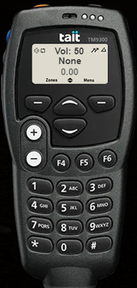

Using the Radio
You'll need to be on the Police Radio to communicate and respond to events happening.
1. Activating your Radio
- Hit
T on your keyboard to open your chat.
- Type
/radio then press Enter.
Your radio should now appear in the bottom right of your screen.
2. Set Up Your Channel & Callsign
- Click the power button at the top right of the radio to turn it On/Off.
- Click within the field showing
0.00, type 1.00 and press Enter.
- Tap the right arrow twice to move to the callsign field, enter your callsign, and press Enter.
- Press Esc or type
/radio again to put your radio away.
- Hold Left Alt to transmit over the radio (This can be remapped in your FiveM Keybinds).
3. Radio Interface Guide

Hover over each area for its function.